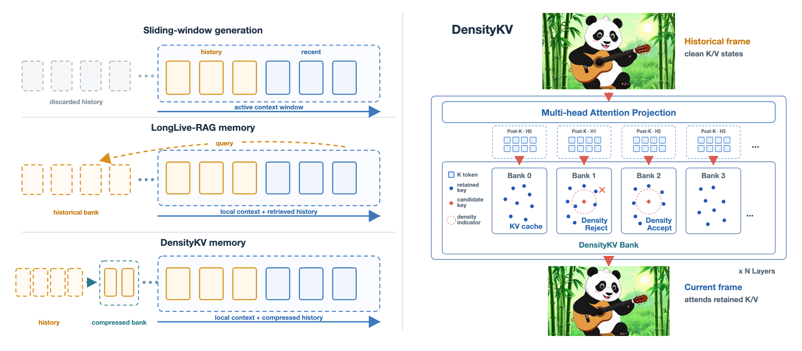

Measure local density
Soft-Riesz interactions estimate repeated coverage without an auxiliary retriever.
Density-Guided KV Cache Compression for Long Video Generation
1Manifold AI 2Tsinghua University *Corresponding author
TL;DR: DensityKV keeps a bounded, token-level historical KV memory by suppressing repeated coverage in dense post-RoPE key-space neighborhoods.
Autoregressive video diffusion models enable streaming generation through sliding-window attention, but each generated block is conditioned on previously generated content, causing appearance and motion errors to propagate recursively over time. Historical key-value (KV) memory preserves earlier subject and scene states and helps maintain long-horizon consistency. However, retaining every generated state creates a historical archive that grows continuously with the rollout, while recurrent states repeatedly add redundant coverage.
We propose DensityKV, a training-free historical KV bank management strategy. It maintains a separate token-level bank for each attention head and measures local redundancy among post-RoPE keys using Soft-Riesz density. By constraining neighborhood-density growth after admission, DensityKV limits repeated historical accumulation while preserving coherent states from each completed generation block. Across three autoregressive video backbones and multiple generation lengths, DensityKV improves long-horizon consistency under the same upper bound on historical KV capacity while keeping persistent storage bounded independently of rollout length.
Method
DensityKV manages exact K/V pairs at token granularity. Retention decisions are made in each head's post-RoPE key space, while every retained value remains paired with its original key.

Soft-Riesz interactions estimate repeated coverage without an auxiliary retriever.
Admission-relative growth limits repeatedly observed neighborhoods after they enter memory.
The backbone directly reads the retained history through its native attention path.
Qualitative results
Each video shows the native backbone, LongLive-RAG, and DensityKV side by side for the same prompt, seed, and 120-second rollout.
Code
The release includes the DensityKV bank implementation, model integration, formal case configurations, and lightweight contract tests. A dry run resolves model, prompt, seed, and output paths without loading a checkpoint.
python scripts/run_paper_case.py \
--case figure1_panda \
--dry-runCitation
Please cite DensityKV if this project is useful in your research.
@article{zhao2026densitykv,
title = {DensityKV: Density-Guided KV Cache Compression for Long Video Generation},
author = {Zhao, Wenqu and Chi, Xuemin and Zhang, Xin and Ma, Guoqing and Li, Baorun and Fang, Jianjie and Tang, Peizhi and Gao, Chen and Wu, Wei},
eprint = {2608.27922},
archivePrefix = {arXiv},
primaryClass = {cs.CV},
year = {2026}
}